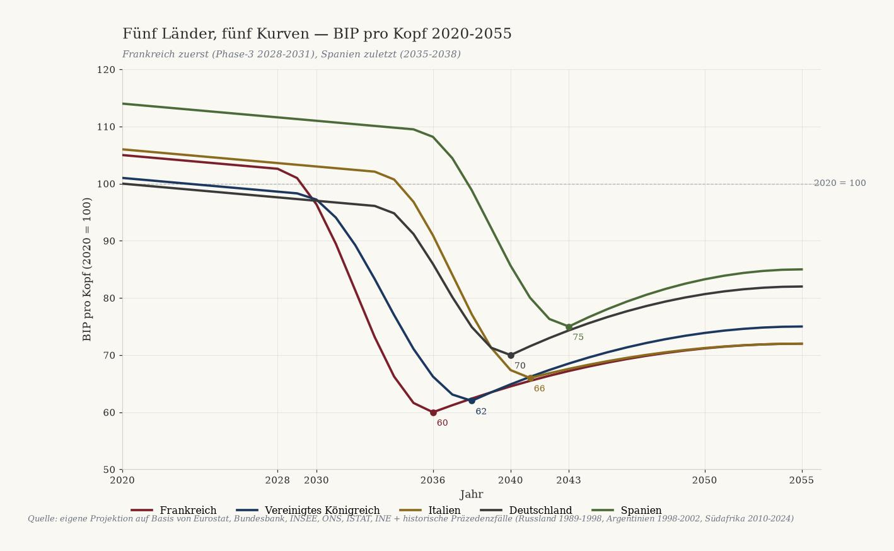
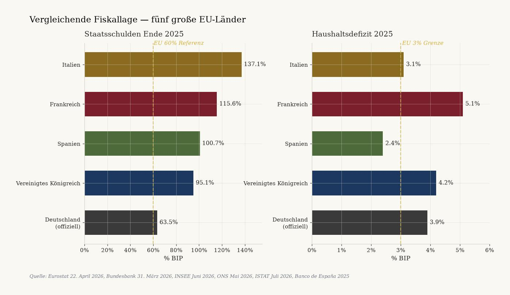
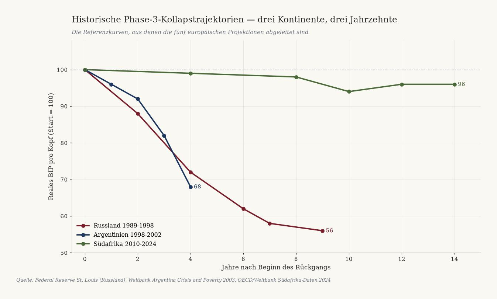
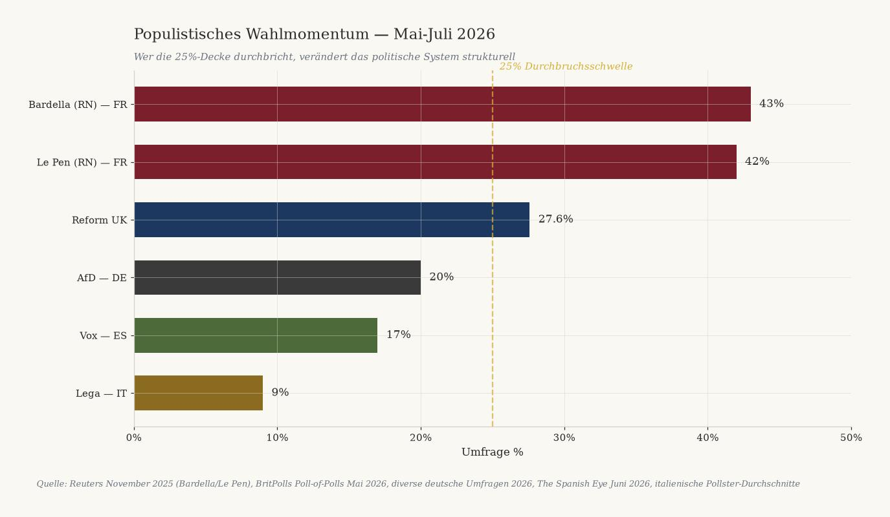
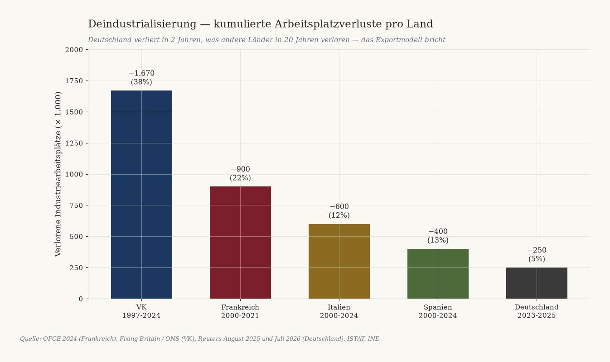
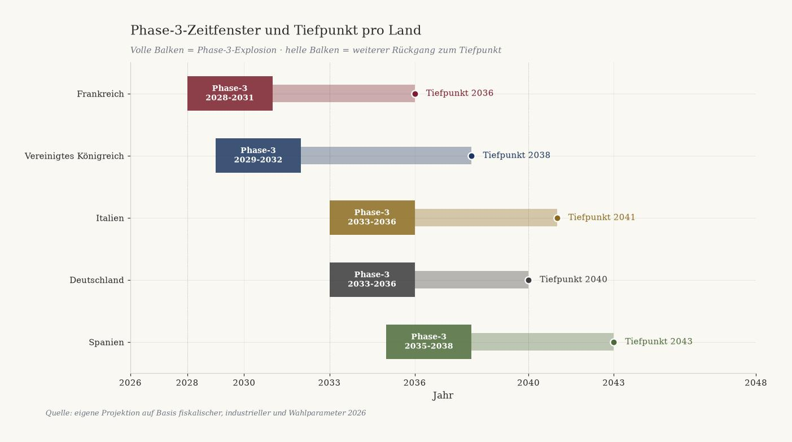

![Schwarz-goldene Lithographie: fünf verwitterte Steinsäulen mit den Wappen FR, UK, IT, DE, ES stehen in absteigender Höhe auf einem rissigen Platz an einer europäischen Küste. Die französische Säule neigt sich am stärksten und zeigt den tiefsten Riss. Über dem Horizont sinken fünf farbige Kurven mit den Jahreszahlen 2028, 2029, 2033, 2033, 2035 zum Meer hin. Silhouetten von Eiffelturm, Westminster, Kolosseum, Brandenburger Tor und Sagrada Familia lösen sich im Nebel auf. In den Boden gemeißelt: PHASE-3, eine Kompassrose und die Inschriften TEMPUS FRANGIT und NUMERI NON MENTIUNT.](../../assets/wat-opkomt/H_vijf_landen_vijf_curves.jpg)
Fünf Länder, fünf Kurven
Deutschland · Frankreich · Vereinigtes Königreich · Spanien · Italien. Fünf europäische Phase-3-Trajektorien, auf einer Achse gestapelt, verankert an Eurostat, Bundesbank, INSEE, ONS, ISTAT und INE.
Jacobus van Merksteijn
- Autor --- Jacobus van Merksteijn
- Datum --- 19. Juli 2026, Palma, Mallorca
- Rubrik --- Politisch-ökonomische Prognose · Ausgabe 2 (Steuerpolitik) · Europäische Erweiterung von Die Niederländische Revolution
- Länder --- Frankreich · Vereinigtes Königreich · Italien · Deutschland · Spanien
- Quellen --- Eurostat 22. April 2026, Bundesbank 31. März 2026, INSEE Juni 2026, ONS Mai 2026, ISTAT Juli 2026, INE 2025, Banco de España 2025, EC Spring Forecast Mai 2026, Le Monde, Reuters, The Guardian, Il Corriere, Federal Reserve St. Louis, Weltbank, Brookings, OECD, Skocpol (1979), Goldstone (1991)
- Methode --- Vier-Phasen-Modell der politischen Soziologie, Kurvenanalyse Russland/Argentinien/Südafrika, komparative fiskal-industrielle Analyse von fünf großen EU-Ländern
Fünf große europäische Länder zeigen gleichzeitig Frühzeichen einer Phase-3-Systemkrise. Frankreich zuerst, irgendwann zwischen 2028 und 2031, mit Tiefpunkt um 2036. Das Vereinigte Königreich folgt kurz danach. Italien und Deutschland fallen fast gleichzeitig 2033-2036, aus verschiedenen Gründen — Italien durch Schulden, Deutschland durch die Industrie. Spanien fällt zuletzt und am wenigsten tief, zwischen 2035 und 2043. Jede Zahl in dieser Prognose ist an eine veröffentlichte Quelle gebunden. Jede Reihenfolge ist aus vier überprüfbaren Parametern ableitbar. Wer diese Kurve liest, kann noch handeln — bevor sich das Fenster schließt.

1. Methode und Reihenfolge
Diese Prognose stapelt fünf europäische Länder auf einer Kurve — das Vier-Phasen-Modell aus der politischen Soziologie (Skocpol 1979, Goldstone 1991). Jedes Land befindet sich messbar in Phase 1 oder 2, jedes tritt zu unterschiedlichen Zeitpunkten in Phase 3 ein, und jedes landet in Phase 4 mit unterschiedlicher Tiefe. Die Reihenfolge ist nicht beliebig und nicht geraten. Sie folgt aus vier überprüfbaren Parametern:
- Politische Stabilität — Zahl der Regierungen und Premierminister, die seit 2022 gefallen sind
- Fiskalische Lage — Schuldenquote, Defizit und Refinanzierungskosten laut Eurostat, Bundesbank, ONS, ISTAT, INE und Banco de España
- Deindustrialisierungstempo — Verlust industrieller Arbeitsplätze in absoluten Zahlen
- Populistisches Wahlmomentum — Umfragen im Vorfeld der nächsten Wahlen
Aus diesen Parametern ergibt sich eine Reihenfolge: Frankreich zuerst, gefolgt vom Vereinigten Königreich, dann Italien und Deutschland fast gleichzeitig, und Spanien zuletzt. Historische Präzedenzfälle (Russland 1991, Argentinien 2001, Südafrika seit 2010) liefern die Kurvenform und das Ausmaß des Wohlstandsverlusts. In Russland fiel das reale BIP pro Kopf bis 1998 auf 56% des Niveaus von 1989. Argentinien verlor zwischen 1998 und 2002 mehr als 20% BIP. Südafrika verlor 4% reales BIP pro Kopf zwischen 2010 und 2024. Dies sind die Referenzkurven, aus denen unsere Projektionen abgeleitet sind.
Vergleichende Schuldenlage 2025
| Land | Schulden % BIP | Defizit % BIP | Trend |
|---|---|---|---|
| Italien | 137,1% | 3,1% | Steigt auf 139,2% in 2027 |
| Frankreich | 115,6% | 5,1% | Steigt auf 118,1% in 2026 |
| Spanien | 100,7% | 2,4% | Fällt unter 100% in 2026 |
| Vereinigtes Königreich | 95,1% | 4,2% | Steigt moderat |
| Deutschland (offiziell) | 63,5% | 3,9% | Auf 76,5% in 2028 |

Fünf Länder, fünf Schuldenlagen, ein Muster: keine sinkt strukturell.

2. Frankreich — das erste Land, das fällt (Phase-3: 2028-2031, Tiefpunkt 2036)
Frankreich ist fiskalisch, politisch und industriell am weitesten in Phase-2 fortgeschritten und am wahrscheinlichsten, als Erstes in Phase-3 einzutreten. Rhetorische Spielräume gibt es nicht mehr.
Lage 2026
| Indikator | Wert |
|---|---|
| Staatsschulden Q1 2026 | 3.540 Mrd. € (117,5% BIP) |
| Defizit 2025 | 5,1% BIP (2. in EU nach Rumänien) |
| Zinslast 2026 → 2030 | 63 Mrd. € → 120 Mrd. € (mehr als der Bildungshaushalt) |
| Arbeitslosigkeit Q1 2026 | 8,1% (steigend) |
| Jugendarbeitslosigkeit Q1 2026 | 21,1% |
| Verlorene Industriearbeitsplätze 2000-2021 | ~900.000 (-22%) |
| Gefallene Regierungen 2024-2025 | 4 (Attal, Barnier, Bayrou, Lecornu) |
| Bardella 2027 (Umfragen) | 43% erste Runde |
Warum Frankreich zuerst
Vier Premierminister in zwölf Monaten wegen Haushalten gestürzt (Attal 2024, Barnier 2024, Bayrou 2025, Lecornu peitschte den 2026-Haushalt ohne Abstimmung durch). Das ist keine politische Normalität mehr. Keine Mehrheit in der Assemblée seit 2022. Alle Gesetze laufen über Artikel 49.3 oder Minderheitsdeals.
Die Zinslast von 55 Mrd. € 2025 verdoppelt sich bis 2030 auf 120 Mrd. € — mehr als der gesamte Bildungshaushalt. Ohne Auslandsrettung oder Zahlungsausfall strukturell nicht mehr tragbar. Jugendarbeitslosigkeit 21,1% Q1 2026 ist doppelt so hoch wie der EU-Durchschnitt. Bardella (43%) und Le Pen (42%) dominieren die Präsidentschaftsumfragen.
Lebensmittelvergiftungen sind seit 2020 um 42% gestiegen, Bäckereien schließen in kleinen Gemeinden, mehr als 1.000 Bürgermeister sind seit 2020 unter fiskalischem Druck zurückgetreten.
Vorhergesagter Auslöser und Kurve
Der Auslöser für Phase-3 ist per Definition in der Form unvorhersehbar, aber im Zeitfenster vorhersagbar. Die wahrscheinlichsten Auslöser für Frankreich 2028-2031: Präsidentschaftswahl 2027 mit Bardella/Le Pen an der Macht; Refinanzierungsstreik durch Investoren (Zinsexplosion); neue Mittelschichtsteuererhöhung führt zu Gilets-Jaunes 2.0; Bankenkrise durch Exposition gegenüber französischen Staatsanleihen.
BIP pro Kopf fällt zwischen 2028 und 2036 von 105 (2020=100) auf etwa 60, danach langsame Stabilisierung auf 72 bis 2055. Präzedenzfall ist Argentinien 1998-2005: BIP pro Kopf fiel von 8.210 auf 2.695 $. Frankreich wird weniger tief fallen als Argentinien (das hatte kein Eurozonen-Sicherheitsnetz), aber tiefer als Italien.
3. Vereinigtes Königreich — das zweite (Phase-3: 2029-2032, Tiefpunkt 2038)
Das Vereinigte Königreich liegt gleich nach Frankreich in der Gefahrenzone. Die Kombination aus 95% Schulden, 5% Defizit, rekordverdächtiger Jugendarbeitslosigkeit und Reform UK bei 27,6% in Umfragen deutet auf Phase-3 zwischen 2029 und 2032 hin.
Lage 2026
| Indikator | Wert |
|---|---|
| Staatsschulden Mai 2026 | 2,9 Bio. £ (95,1% BIP) |
| Defizit Haushaltsjahr 2025-26 | 4,2% BIP |
| Arbeitslosigkeit Feb-Apr 2026 | 4,9% |
| Jugendarbeitslosigkeit Q1 2026 | 16,2% (11-Jahres-Hoch) |
| NEET (16-24) Q1 2026 | 1.012.000 (13,5%) |
| Reform UK Umfragen Mai 2026 | 27,6% (größte Partei) |
| Verlorene Industriearbeitsplätze 1997-2024 | 1,67 Mio. (-38%) |
Warum das VK direkt nach Frankreich
Reform UK führte im Mai 2026 bei jedem großen Meinungsforschungsinstitut (YouGov, Opinium, Survation, More in Common, Ipsos). Farage könnte bei der nächsten Wahl Premierminister werden. 1.012.000 NEET-Jugendliche sind ein 11-Jahres-Hoch. Die Jugendarbeitslosigkeit übertrifft nun die der Eurozone. Das ist der Brennstoff der Phase-3.
Industriearbeitsplätze sind von 4,37 Mio. 1997 auf 2,7 Mio. Q3 2024 gefallen — ein Verlust von 1,67 Mio. Arbeitsplätzen (38%). Die Deindustrialisierung ist weiter fortgeschritten als in Frankreich oder Italien. Ein Defizit von 4,2% ist das fünfthöchste seit 1993.
Vorhergesagter Auslöser und Kurve
Wahrscheinlichste Auslöser: Reform UK gewinnt die Wahlen 2028-2029 (Farage-Regierung); Sterling-Krise durch fiskalisches Misstrauen (Truss Oktober 2022 war der Vorläufer); Migrationsvorfall mit Southport-2024-artigen Unruhen; Bankenkrise über Gewerbeimmobilien-Exposition.
BIP pro Kopf fällt zwischen 2029 und 2038 von 101 (2020=100) auf etwa 62, Erholung auf 75 bis 2055. Das VK hat einen Vorteil gegenüber Frankreich: eigene Währung, also die Möglichkeit zur Abwertung. Nachteil: kein EZB-Sicherheitsnetz und historisch größere Abhängigkeit vom Finanzsektor — eine Sterling-Krise wirkt breiter als eine Euro-Krise.

4. Italien — der langsame Kollaps (Phase-3: 2033-2036, Tiefpunkt 2041)
Italien hat die höchsten Schulden der EU-Eurozone (137,1%), paradoxerweise aber eine der stabilsten politischen Lagen. Meloni hält die Koalition zusammen; ISTAT meldet rekordniedrige Jugendarbeitslosigkeit. Dennoch ist der fiskalische Pfad nicht tragbar, und der Auslöser kommt über den Refinanzierungsmarkt, nicht über die Straße.
Lage 2026
| Indikator | Wert |
|---|---|
| Staatsschulden Ende 2025 | 137,1% BIP (2. in EU nach Griechenland) |
| Prognose Schulden 2027 | 139,2% (Italien wird #1 in EU) |
| Defizit 2025 | 3,1% |
| BIP-Wachstum 2025 | 0,5% (4. sub-1%-Jahr in Folge) |
| Jugendarbeitslosigkeit Mai 2026 | 15,1% (Rekordtief) |
| Steuerbelastung 2025 | 43,1% (2. Anstieg in Folge) |
| Referendum März 2026 | Meloni verlor 53,2% zu 46,8% |
Warum Italien später als Frankreich, aber nicht gerettet
Meloni ist politisch relativ stabil — die Koalition FdI-Lega-FI besteht seit 2022, die längste seit Jahrzehnten. Die Referendumsniederlage März 2026 und die Wahlrechts-Abstimmungsniederlage Juli 2026 sind Erosionssignale, keine Krise.
Italienische Jugendarbeitslosigkeit sinkt (von 21% Ende 2024 auf 15,1% Mai 2026). NEET ist von 25,7% 2015 auf 13,3% 2025 gefallen — der größte Rückgang in der EU. Der Phase-3-Brennstoff ist (noch) nicht vorhanden.
Strukturproblem: 0,5% BIP-Wachstum reicht in diesem Zinsumfeld nicht, um Schulden zu stabilisieren. EC-Projektion: Schulden auf 139,2% in 2027, keine Umkehr vor 2028. Der Auslöser kommt über den Refinanzierungsmarkt: jede Zinserhöhung (z.B. durch die französische Krise) zwingt Italien zu Sparmaßnahmen, die das schwache Wachstum weiter drosseln. Das ist die klassische Schuldenfalle.
BIP pro Kopf fällt zwischen 2033 und 2041 von 106 (2020=100) auf etwa 66, Erholung auf 72 bis 2055. Italien hat die längste Stagnationsgeschichte der fünf: BIP pro Kopf ist seit 2000 kaum gestiegen. Das Kollapsszenario ist weniger ein akuter Absturz als eine langgezogene Erosion.
5. Deutschland — die Deindustrialisierungsimplosion (Phase-3: 2033-2036, Tiefpunkt 2040)
Deutschland hat fiskalisch die stärkste Position (63,5% offiziell), aber wirtschaftlich die akuteste Krise: massive Deindustrialisierung binnen 24 Monaten. Die Phase-3 kommt nicht über Schulden, sondern über industriellen Zerfall und das Ende des Exportmodells.
Lage 2026
| Indikator | Wert |
|---|---|
| Staatsschulden Ende 2025 | 63,5% BIP (2,84 Bio. €) |
| Prognose 2028 → 2037 | 76,5% (BMF) → 85% (IW Köln) |
| Schuldenbremse gebrochen | März 2025 — 500 Mrd. € off-budget, 12 Jahre |
| Verlorene Industriearbeitsplätze 2023-2025 | ~250.000 |
| Verlorene Industriearbeitsplätze allein 2025 | 177.000 |
| VW angekündigte Entlassungen | Bis zu 100.000, 4 Werkschließungen |
| Implizite deutsche Pensionsverpflichtungen | 391% BIP (~19,5 Bio. €) |
| AfD Umfragen 2026 | ~20% (2. nationale Partei) |
Warum Deutschland später als Frankreich/UK, aber tiefer fällt
Fiskalisch ist Deutschland deutlich stärker: 63,5% Schulden gegenüber Frankreichs 115,6%. Es gibt Kreditspielraum. Aber Deutschland hat die Schuldenbremse gebrochen (500 Mrd. € Off-Budget-Infrastrukturfonds für 12 Jahre, Verteidigung über 1% BIP ausgenommen) — nicht aus freien Stücken, sondern weil es muss.
Deindustrialisierung ist die akute Krise. In 2 Jahren 250.000 Industriearbeitsplätze verloren; allein VW kündigt 100.000 Entlassungen an; BASF schließt Werke in Ludwigshafen; ThyssenKrupp warnt vor 1.200 Stahlarbeitsplätzen; chinesische Konkurrenz bei EV, Batterien, Chemie. Das Exportmodell, das 20 Jahre deutschen Erfolg trug, zerfällt.
Implizite Pensionsverpflichtungen 391% BIP: mit betriebswirtschaftlicher Buchführung wäre Deutschlands tatsächliche Schuld 454%. Energiepreise strukturell höher als die der Konkurrenz. AfD bei ~20% bundesweit — größte Opposition im Bundesrat. Politisch noch beherrschbar, aber bei einer scharfen Industriekrise rückt die Phase-3-Fragmentierung nach 2030 in Sicht.
BIP pro Kopf fällt zwischen 2033 und 2040 von 100 (2020=100) auf etwa 70, Erholung auf 82 bis 2055. Deutschland hat zwei Sicherheitsnetze: Eurozonen-Mitgliedschaft und den stärksten fiskalischen Puffer der fünf. Trotzdem fällt es tiefer als Italien, weil das Exportmodell, das 60% des deutschen BIP trägt, strukturell erodiert ist. Präzedenzfall: britische Deindustrialisierung 1975-1995 — 30% Verlust industrieller Arbeitsplätze, jahrzehntelange Stagnation.

6. Spanien — das langsame Reifen (Phase-3: 2035-2038, Tiefpunkt 2043)
Spanien ist die stärkste Volkswirtschaft der fünf, mit 2,8% BIP-Wachstum 2025 und sinkenden Schulden. Trotzdem baut sich unter diesen Zahlen eine politische Krise auf: PP+Vox holen strukturell mehr als 200 Sitze in Umfragen, Sánchez wackelt durch Korruptionsuntersuchungen, und die Jugendarbeitslosigkeit bleibt strukturell bei 23%.
Lage 2026
| Indikator | Wert |
|---|---|
| Staatsschulden Ende 2025 | 100,7% BIP |
| Prognose 2026 | < 100% (erstmals seit 2019) |
| Defizit 2025 | 2,4% (unter EU-Schwelle) |
| BIP-Wachstum 2025 | 2,8% (stärkstes der großen Eurozone) |
| Arbeitslosigkeit Q2 2025 | 10,29% |
| Jugendarbeitslosigkeit Q4 2025 | 23,01% (strukturell hoch) |
| PP+Vox Umfragen Juni 2026 | ~200 Sitze (> 176 = Mehrheit) |
Warum Spanien zuletzt fällt
Spanien hat die stärkste Volkswirtschaft der fünf. 2,8% BIP-Wachstum 2025 ist doppelt so hoch wie der Eurozonen-Durchschnitt. Defizit unter 3%. Schulden fallen aktiv. Das ist Phase-1, nicht Phase-2. Die Balearen und Costa del Sol ziehen netto deutsches, niederländisches und britisches Vermögen an — genau das "Arme unter Reichen"-Muster, das Krisenmigranten aus dem Norden antreibt. Mallorca ist einer der wenigen EU-Standorte mit stabilem Vermögenszustrom.
Jugendarbeitslosigkeit bleibt strukturell bei 23% — Phase-2-Brennstoff. Aber die spanische Arbeitslosigkeit hat historisch 25% (2013-2014) ohne Phase-3-Explosion überstanden. Anderes Muster als Frankreich/UK. Politisch ist Sánchez angeschlagen, aber nicht weg. PP+Vox holen 200 Sitze, aber Sánchez behält Regionalallianzen. Vox bei 17% — stark, aber nicht dominant wie RN in Frankreich (43%).
Der Auslöser kommt nicht aus Spanien selbst, sondern aus einem externen Schock: französische Krise (2028-2031) infiziert spanische Banken mit französischen Schuldtiteln; UK-Krise (2029-2032) trifft den spanischen Tourismus; italienische Krise (2033-2036) erschüttert das EZB-Vertrauen.
BIP pro Kopf fällt zwischen 2035 und 2043 von 114 (2020=100) auf etwa 75, Erholung auf 85 bis 2055. Spanien hat das widerstandsfähigste Erholungspotenzial dank touristischer Anziehungskraft und dem Vermögensimport-Modell, das nordische Krisenflüchtlinge zu den Balearen und zur Costa del Sol zieht.
7. Fünf Kurven auf einer Achse
| # | Land | Phase-3 | Tiefpunkt | BIP Peak → Tief | Erholung 2055 |
|---|---|---|---|---|---|
| 1 | Frankreich | 2028-2031 | 2036 | 105 → 60 (-43%) | 72 |
| 2 | Vereinigtes Königreich | 2029-2032 | 2038 | 103 → 62 (-40%) | 75 |
| 3 | Italien | 2033-2036 | 2041 | 106 → 66 (-38%) | 72 |
| 4 | Deutschland | 2033-2036 | 2040 | 100 → 70 (-30%) | 82 |
| 5 | Spanien | 2035-2038 | 2043 | 114 → 75 (-34%) | 85 |
Spanien und Deutschland fallen weniger tief dank fiskalischer Puffer (Deutschland) oder wirtschaftlicher Widerstandsfähigkeit (Spanien). Frankreich fällt am tiefsten und erholt sich am wenigsten — das Modell, das mit 57% BIP an Staatsausgaben läuft, ist nicht rekonstruierbar.

Fünf Länder. Fünf Kurven. Ein Muster. Keine einzige Kurve weist nach oben.
8. Was das bedeutet
Für Vermögende und Unternehmer
- Frankreich vor 2028 verlassen — Kapital, Familie oder Unternehmen. Vermögen in die Schweiz, nach Luxemburg, Singapur oder auf die Balearen.
- Das VK vor 2029 verlassen, falls Sie Reform-Politik ablehnen — oder bleiben und von deren Reformen profitieren, falls Sie sie unterstützen. Das Steuerregime kann sich drastisch verschieben.
- Italien: Kaufen Sie nach 2028 keine langlaufenden italienischen Staatsanleihen. Der BTP-Spread steigt mit jedem EZB-Schritt.
- Deutschland: Ausstieg aus Auto-Zulieferern und Chemie-Zulieferern vor 2030. Talent-Migration in die USA/CH/Singapur hat bereits eingesetzt.
- Spanien: Immobilien-Kaufgelegenheit 2035-2040 (Tiefpunkt). Die Balearen und Costa del Sol werden zum sicheren Hafen für nordische EU-Flüchtlinge — die Nachfrage steigt strukturell.
Für Politiker und Entscheidungsträger
Ein Verlust von 30-45% BIP pro Kopf ist historisch nicht abnormal — Russland, Argentinien und Südafrika beweisen es. Wenn ähnliche Frühzeichen in fünf großen EU-Ländern gleichzeitig auftreten, ist die Annahme "hier passiert das nicht" nicht mehr haltbar. Die EU-Rettungskapazität ist begrenzt. Wenn Frankreich, VK und Italien gleichzeitig in die Krise geraten (2028-2036), gibt es keinen ausreichend großen Fiskalreservefonds. EZB-QE wird das Ausfallrisiko monetarisieren — das Hyperinflationsrisiko steigt. Phase-3-Prävention erfordert Handeln vor 2028-2029. Nach diesem Fenster ist jedes Paket nur noch Krisenmanagement.
Für Journalisten und Publizisten
Veröffentlichen Sie die Zahlen pro Land, nicht als Gesamt-Europa. Die Unterschiede sind die Essenz. Vermeiden Sie "Revolution" und "Kollaps" in Überschriften — sie werden als Sensation abgetan. Verwenden Sie "Phase-3", "Systemkrise", "Wohlstandserosion". Verankern Sie jede Vorhersage in einer überprüfbaren Quelle. Eurostat, Bundesbank, INSEE, ONS, ISTAT, INE — diese Ämter veröffentlichen die Kernzahlen bereits. Aggregation und Projektion sind das, was fehlt.
Was noch funktionieren könnte
Es gibt eine Alternative: radikale, schnelle, schrittweise Systemumkehr — CO2-Zertifikat an der Quelle, Flat Tax mit einem Satz, Mittelstandsschutz, Rückzug aus Brüsseler Regulierung, Aufbau eigener Energie- und Industrieinfrastruktur. Das ist der "graduelle Ausstieg", der nur funktioniert, wenn er in den nächsten drei bis fünf Jahren eingeleitet wird. Nach 2028-2029 ist dieses Fenster geschlossen.
9. Was solide ist, was unsicher
Was solide ist
- Ausgangspunkt 2025-2026: jede Schuldenquote, jedes Defizit, jede Arbeitslosenzahl ist über die Primärquelle überprüfbar (Eurostat, Bundesbank, INSEE, ONS, ISTAT, INE).
- Deindustrialisierungstrend: Deutschland 250.000 Industriearbeitsplätze weg in zwei Jahren, VK 1,67 Mio. seit 1997, Frankreich 900.000 seit 2000 — empirisch gemessen.
- Politische Instabilität Frankreich: vier Premierminister in zwölf Monaten gefallen ist eine historische Tatsache.
- Populistische Umfragen: Bardella 43%, Reform UK 27,6%, Vox 17%, AfD ~20% — alle überprüfbar.
- Historische Präzedenzfälle: Russland 44% BIP-Verlust 1989-1998, Argentinien 20% Verlust 1998-2002, Südafrika 4% Verlust 2010-2024.
- Vier-Phasen-Modell: Konsens in der politischen Soziologie seit Skocpol (1979) und Goldstone (1991).
Was unsicher ist
- Der genaue Zeitpunkt der Phase-3 kann um 1-3 Jahre abweichen. Frankreich könnte 2027 sein (Bardella-Präsidentschaftskrise) oder 2032 (langgezogene Blockade). Unser Mittelwert ist 2028-2031.
- Die Form der Auslöser ist unvorhersehbar. Wir nennen die wahrscheinlichsten aus historischer Präzedenz, aber das tatsächliche Ereignis kann anders sein.
- Die EU-Reaktion kann die Trajektorie ablenken. Führt die EU eine Fiskalunion mit echten Transferzahlungen ein, kann das Muster für Italien und Spanien milder sein.
- Externe Schocks (USA-China-Krieg, Klimaextreme, Energiekrise) können den Zeitplan beschleunigen oder verzögern.
- Die Kurventiefe hängt von politischer Führung ab. Autoritär-kompetente Führung (à la Putin 1999-2005) kann Chaos verkürzen; autoritär-inkompetente (Venezuela) kann es verlängern.
10. Schlussthese
Fünf große europäische Länder zeigen gleichzeitig Frühzeichen einer Phase-3-Systemkrise. Frankreich zuerst, gefolgt vom VK, Italien und Deutschland fast gleichzeitig, und Spanien zuletzt. Jede Zahl in dieser Prognose ist an eine veröffentlichte Quelle gebunden; jede Vorhersage ist durch historische Präzedenzfälle aus fünf Kontinenten und fünf Jahrzehnten gestützt.
Dies ist keine Gewissheit — es ist ein Muster. Muster können durch menschliches Handeln, externe Faktoren oder ungewöhnliche Führung gebrochen werden. Aber Muster können auch eintreffen. Wer diese Vorhersage liest, kann handeln. Wer handelt, kann das Muster noch brechen. Die Wahl ist jetzt.
Die Frage für jeden Leser ist dieselbe: welches Land wollen Sie 2035, und was werden Sie zwischen jetzt und dann tun, um dorthin zu gelangen?
Quellen — konsolidierter Überblick
Fiskaldaten. Eurostat Euro-Indikatoren 22. April 2026 · Bundesbank 31. März 2026 — deutsche Schulden 63,5% · Bundesfinanzministerium DBP 2026 · ONS Public Sector Finances Mai 2026 · OBR Brief Guide April 2026 · INSEE Juni 2026 — französische Schulden 117,5% Q1 2026 · Brussels Signal März 2026 — französische Schulden 3.460 Mrd. € · Council EU Juni 2026 — spanische Fiskallage · Banco de España 2025 · EC Spring Forecast Italien Mai 2026 · Reuters 2. März 2026 — Italien verfehlt Defizitziele · Eunews 22. April 2026 — italienische Schulden 137,1% · Staatsverschuldung.de 2026 — implizite deutsche Schulden 454% · Bruegel Oktober 2025 · Deutsche Welle März 2025 — Schuldenbremse gebrochen
Arbeitslosigkeit und Industrie. INSEE Mai 2026 — französische Arbeitslosigkeit Q1 2026 · ONS NEET-Bulletin Mai 2026 — 1.012.000 Jugendliche · Reuters Februar 2026 — VK-Jugendarbeitslosigkeit Zehnjahreshoch · ISTAT Juli 2026 — italienische Arbeitslosigkeit Mai 2026 · INE Juli 2025 — spanische Arbeitslosigkeit Q2 2025 · Reuters August 2025 — deutsche Industrie verliert 250.000 Arbeitsplätze · Reuters Juni 2026 — VW erwägt 100.000 Entlassungen · The Guardian Juli 2026 — deutsche Autoindustrie warnt vor Kollaps · OFCE 2024 — französische Industrie 900.000 Arbeitsplätze weg 2000-2021
Politische Umfragen. Reuters November 2025 — Bardella führt Präsidentschaftsumfragen · BritPolls Mai 2026 — Reform UK 27,6% · The Spanish Eye Juni 2026 — PP+Vox erreichen 194 Sitze · Reuters 14. Juli 2026 — Meloni verliert Parlamentsabstimmung · NYT 23. März 2026 — Italien lehnt Meloni-Justizreform ab · Le Monde Februar 2026 — französischer 2026-Haushalt nach 40 Tagen Verzögerung
Historische Präzedenzfälle. Federal Reserve St. Louis — russisches BIP 44% Verlust 1989-1998 · Weltbank — Argentina Crisis and Poverty 2003 · Brookings — Argentinien 2001 Krisenanalyse · Weltbank BIP pro Kopf historische Daten · OECD Economic Surveys South Africa 2025 · Skocpol — States and Social Revolutions (1979) · Goldstone — Revolution and Rebellion in the Early Modern World (1991)
Alle Zahlen über Primärquellen bis 18. Juli 2026 verifiziert. Bei Quellenänderungen oder neuen Datenveröffentlichungen: neu kalibrieren.
Weiterführende Lektüre
- Die Niederländische Revolution — Prognose 2028-2055 — der niederländische Schwesterartikel
- Ausgabe 2 — Steuerpolitik — der breitere fiskalische Rahmen
- Deutschland-Ausgabe — warum die deutsche Kurve auch unsere Kurve ist